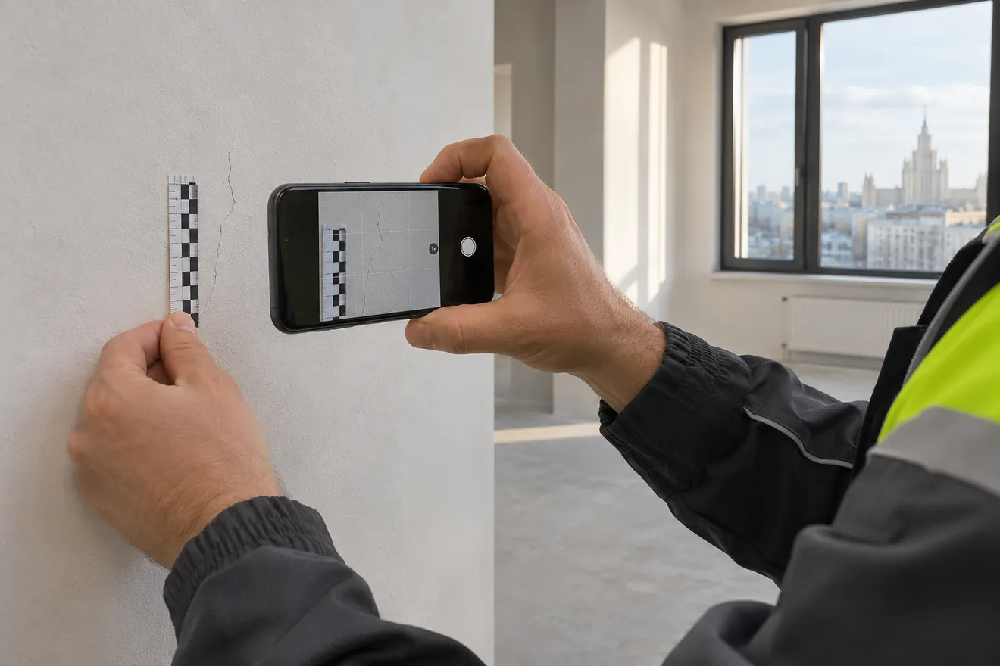
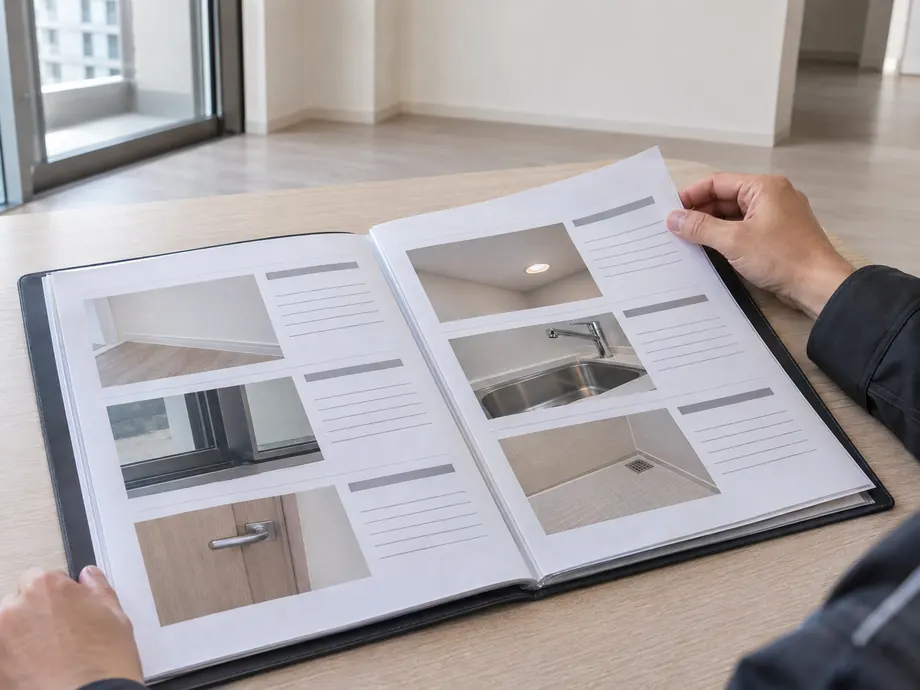
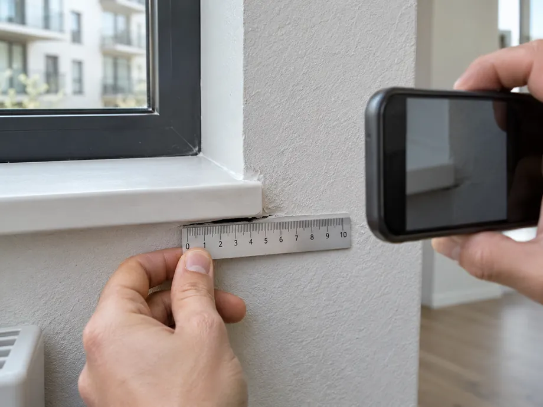

Расположение
Фото показывает комнату или зону, где находится замечание.
Фото сохраняют расположение и внешний вид замечаний. Если фотофиксация предусмотрена условиями услуги, снимки оформляются в альбом осмотра.

Фото показывает комнату или зону, где находится замечание.
Снимок сохраняет видимые особенности недостатка на момент осмотра.
Если фотофиксация входит в услугу, снимки включают в альбом осмотра.

В альбоме собраны фотографии выявленных недостатков и указано их расположение. Если это предусмотрено условиями услуги, материалы передают вместе с актом.
Открыть пример альбома осмотраФотофиксация и альбом осмотра предоставляются по условиям выбранного тарифа или подтверждённого предложения. Уточните состав услуги при записи.
Посмотреть услугу приёмки квартиры
Расскажите о жилом комплексе и дате осмотра. Проверим условия выбранной услуги и подскажем, какой результат вы получите.